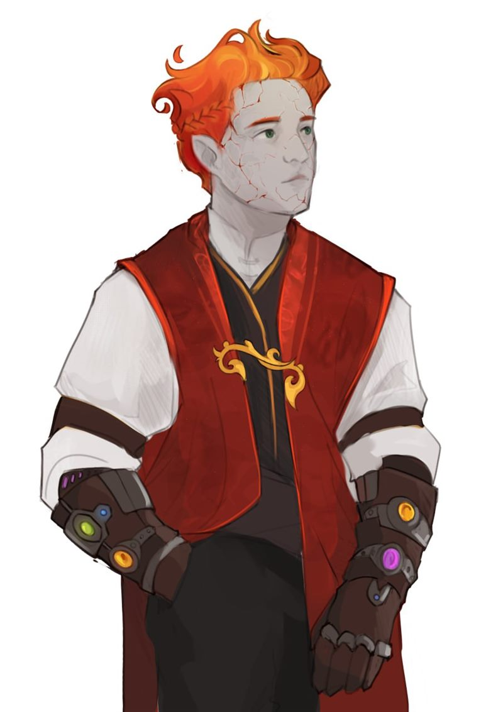
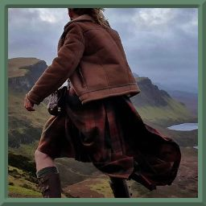
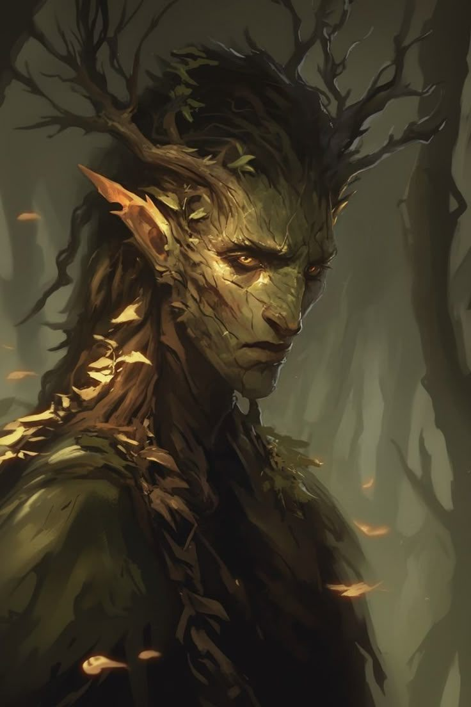

Виды
Каталог всех рас мира Орвей. Используйте поиск или теги, чтобы отфильтровать расы.
Регионы
Типы
ЛюдиHumans
Самый многочисленный вид Орвея: махребы, померанцы, северяне, имперцы, венты, тарраконцы и дубравцы.

ФускарыFuskary
Отмеченные печатью стихий: дети воздуха, земли, огня и воды.

АкрабимыAkrabim
Песчаные ювелиры, чьи когти создают красоту, а жала хранят тайны ядов и лекарств.
ТосабеиTosabei
Саблерогие исполины, помнящие каждую клятву, данную под звёздами.

ХушитыHushit
Шепчущиеся с песком. Их глаза видят не только настоящее, но и то, что было и лишь грядёт.

ШуалыShualy
Лисьи дети пустыни. Их смех звенит монетами на базарах, а хитрость не знает границ.
КутрубыKutrub
Проклятые голодом. Они живут на лезвии между разумом и безумием.
ФаскирыFaskiry
Тени, что помнят тьму Уруда. Чёрные силуэты, плывущие сквозь туман, будто пепел из неведомых могил.
Лесные эльфыWood Elves
Скрытые лесные королевства, обострённые чувства и быстрые ноги.
Высшие эльфыHigh Elves
Солнечные и лунные эльфы с острым умом и знанием основ магии.
Горные дварфыMountain Dwarves
Воины горных чертогов, знатоки боя и владения доспехами.
Холмовые дварфыHill Dwarves
Мудрые хранители предгорий с крепким здоровьем и выдержкой.
Лесной гномForest Gnome
Мастера иллюзий и друзья маленьких зверей.
Скальный гномRock Gnome
Изобретатели и жестянщики, создающие удивительные механизмы.

АльбаниAlbani
Древний народ Померании с голубоватой кожей, чтящий своих предков.
ТифлингиTieflings
Носители чёрной исцеляющей крови и дьявольского наследия.

ГаюныGajuny
Дети леса, родственные феям и духам. Молчаливые стражи чащоб.
ПеревертниPerevertni
Оборотни и шифтеры, несущие в себе звериную душу.
ПолуночникиPolunoshniki
Бледные изгои с заострёнными клыками, живущие между мирами.
КремничиKremnichi
Народ гор и каменных недр, потомки древних духов земли, лучшие кузнецы.
ЯрганыYargany
Степные орки, равные кремничам в кузнечном деле и воинской доблести.
ДжагатаиDzhagatai
Джагатаи Крылатого Улуса — дети степи и пламени, несущие волю крылатых ханов.
ЯламыYalamy
Яламы Крылатого Улуса — низшая каста, рабочие спины Великой Орды.
ФотианеFotiane
Потомки древних жрецов Солнца, народ великой южной империи Фоссории. Мастера металлов и ревностные служители Сияния.